开发环境准备
-
Xcode
Xcode 4.X版本及以上 -
iOS
iOS SDK 5及以上 - 下载并解压iClient for iOS库文件
创建工程
-
在Xcode中，选择"Create a new Xcode project",
选择自己的工程模板后点击"Next"，如下图，这里选择的是Tabbed Application。
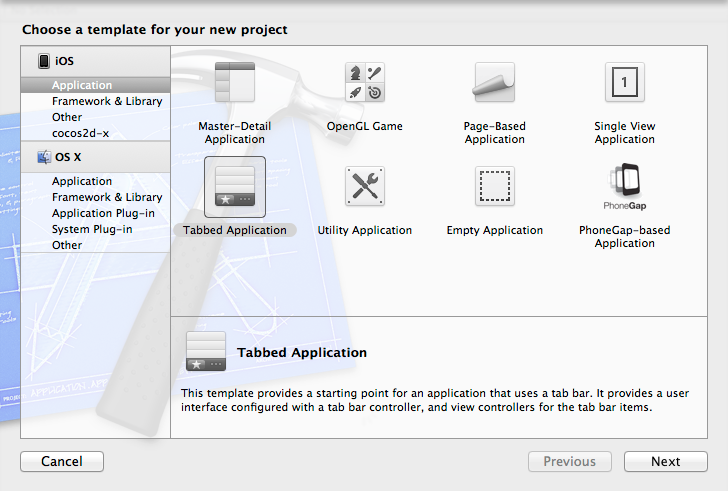
-
设置工程的Name、Organization和Company，指定自己的设备选项，如下图，这里选择的为iPhone,然后点击"Next"。
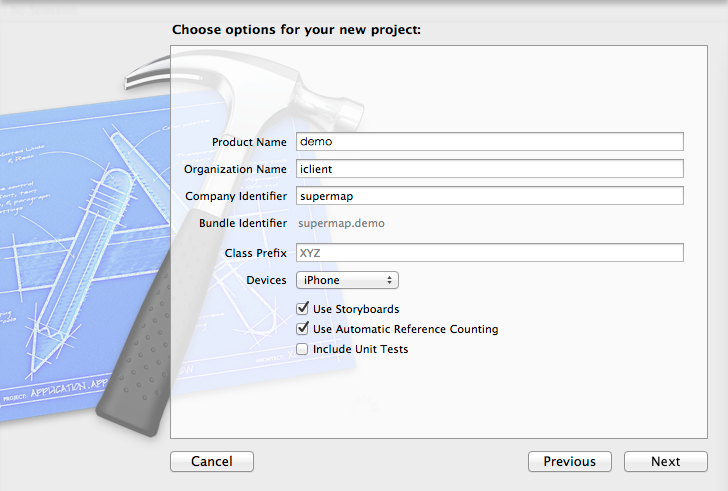
-
保存该工程到指定目录，注意设置是否需要git托管，至此，该工程创建完毕。
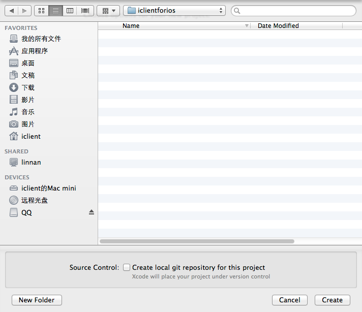
添加依赖库
-
将iClient for iOS开发包中MapView和Proj4文件夹拷贝至刚刚创建工程的文件夹下，然后在Project Name上鼠标右键，点击"Add Files",如下图：
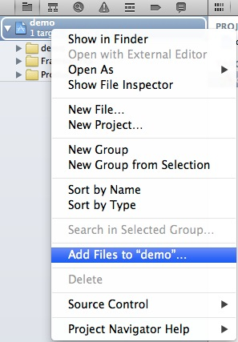
-
将MapView.xcodeproj工程添加到你的工程下，如果提示"Copy items into destination group’s folder (if needed)",请勿点击，最终，工程目录结构如下：
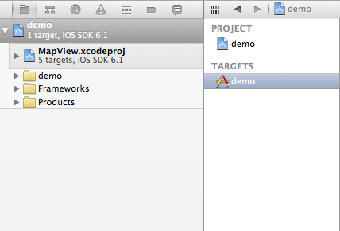
-
下面开始添加工程依赖的库文件，如下图，选择Project Name->TARGETS->Build Phases->Link Binary With Libraries,点击"+"号
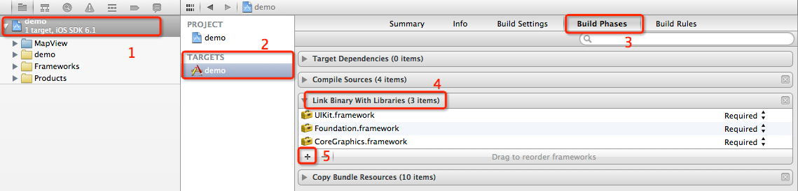
-
选择libMapView.a,点击Add按钮,将iClient for iOS静态库添加至依赖库中
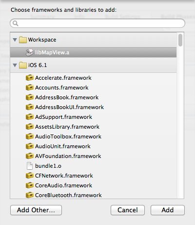
-
相同的方式，依次添加libsqlite3.dylib, libsqlite3.0.dylib, QuartzCore.framwork, CoreFoundation.framework,
最终依赖库清单如下：
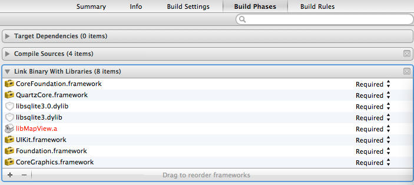
-
当我们把静态库和依赖库添加完成后，需要把头文件的Path路径也添加进行，和添加依赖库方式相似，选择
Build Setting->Header Search Paths(可以在搜索框中输入关键字)
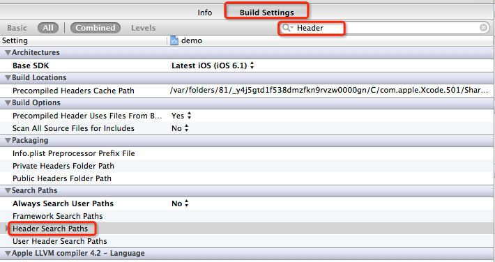
-
双击Header Search Paths空白处，添加MapView文件夹路径，选择recursive遍历方式，如下图：
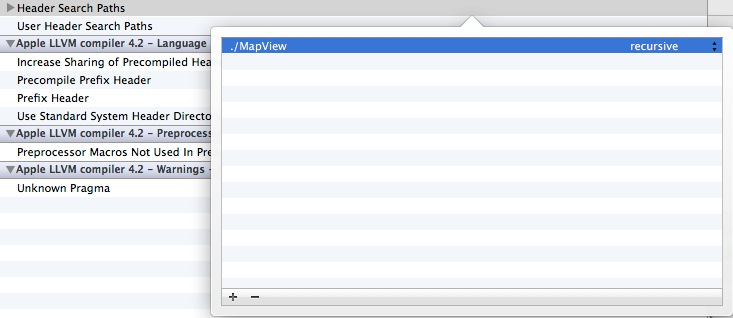此处注意，不要单独选择debug和release空白处，最终头文件路径设置结果如下图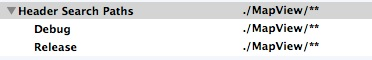
代码实现
-
至此，环境搭建的工作到此结束，打开FirstViewController.h文件，添加如下代码：
#import "RMMapView.h" @interface FirstViewController : UIViewController{ RMMapView *mapView; } @property (nonatomic, retain) RMMapView *mapView; -
打开FirstViewController.m文件，添加如下代码：
@synthesize mapView; - (void)loadView { CGRect bounds = [[UIScreen mainScreen] bounds]; [self setMapView:[[RMMapView alloc] initWithFrame:CGRectMake(0.0, 0.0, bounds.size.width, bounds.size.height)] ]; self.view = mapView; // Your own code }
编译并运行
-
选择模拟器，点击Run运行，say “Hello” to your Map
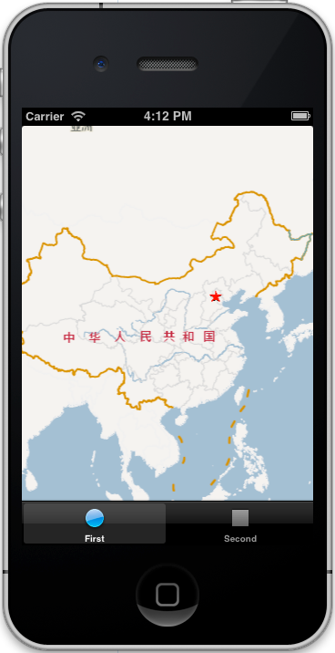